Projects
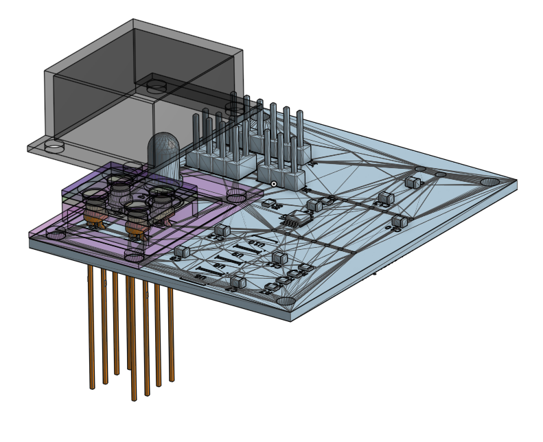
Distributed Wastewater Surveillance Platform Leveraging Hybrid Microfluidic CMOS Biosensors
2024 - 2025
Microfluidics
Synthetic Biology
CMOS Electronics
Cell Culture
PCB Design
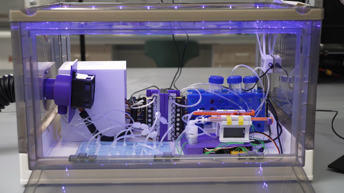
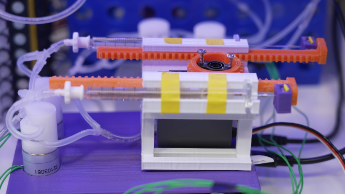
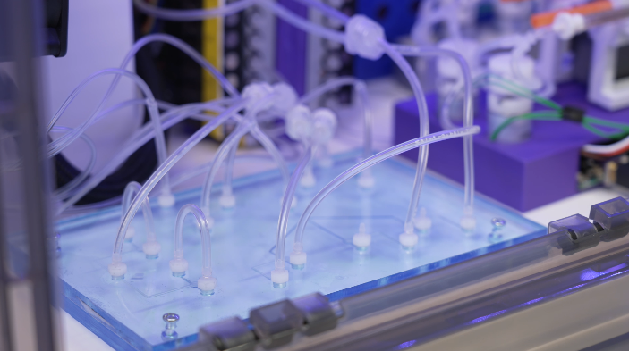
The Automated Plug & Playable Microfluidic System for Cell Communication
2023
3D Printing
Arduino
Mirofluidics
Cell Culture
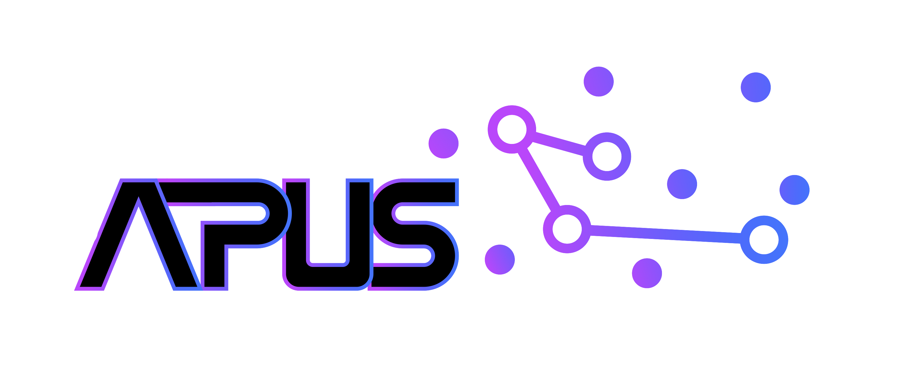

 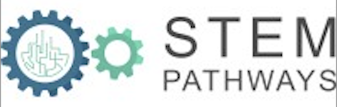
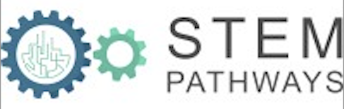


GLM Boost for Immune Response Prediction
2024
Machine Learning
GLM Boost
Immunology


CpG Island Classifier
2024
Python
Bioinformatics
Markov Models
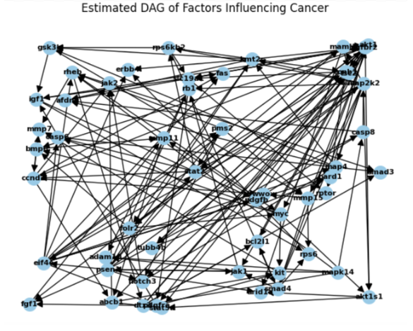
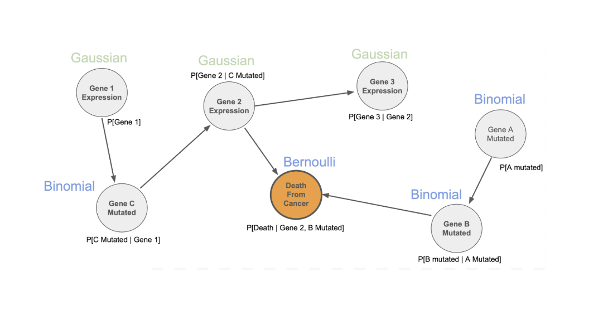

Bayesian Networking for Breast Cancer Survival Predictability
2024
Bayesian Networks
Survival Analysis
Genomics
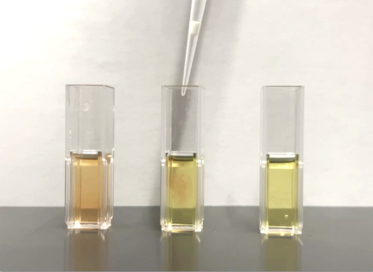
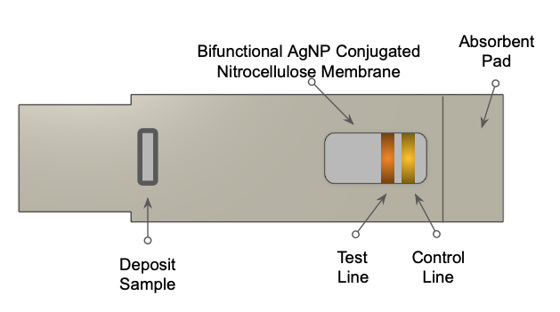
Lateral Flow Assay for Drug-Facilitated Sexual Assault Prevention
2022 - 2023
Nanotechnology
Chemical Sensing
Lateral Flow Assay
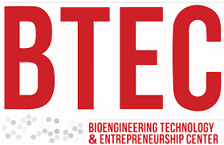
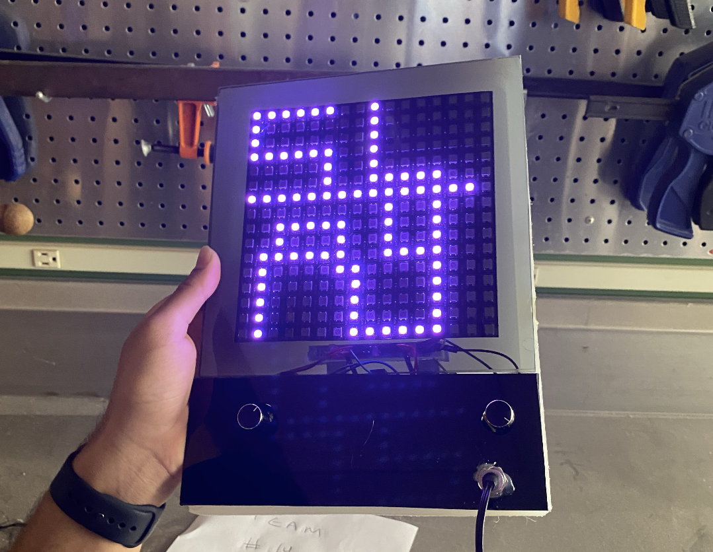


Write-a-Light: an Electronic Version of the Etch-a-Sketch
2022 - 2023
Electronics
Arduino
C++
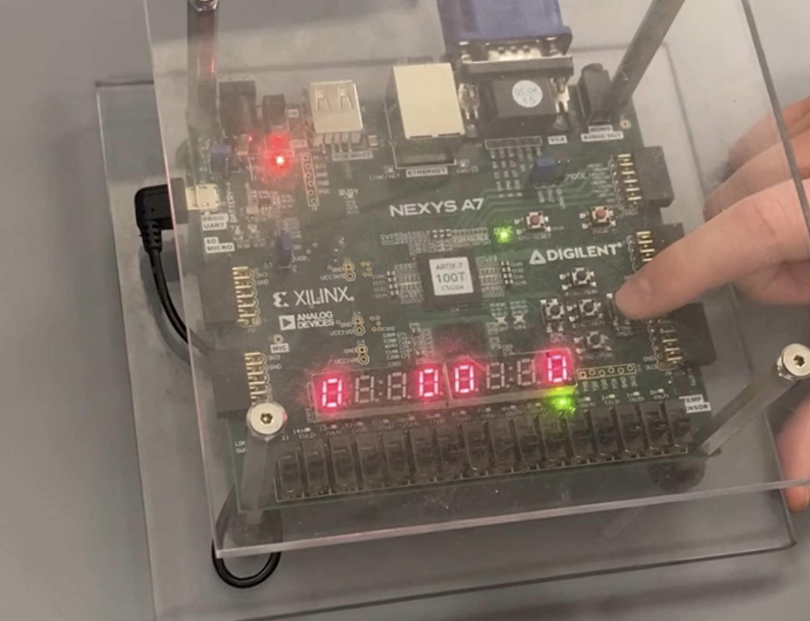


FPGA Tennis
2022 - 2023
Verilog
FPGAs
Digital Circuit Design
Logic Design